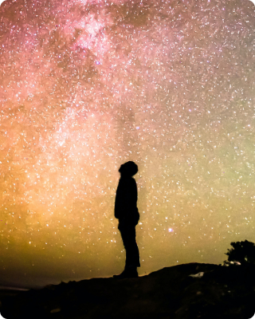
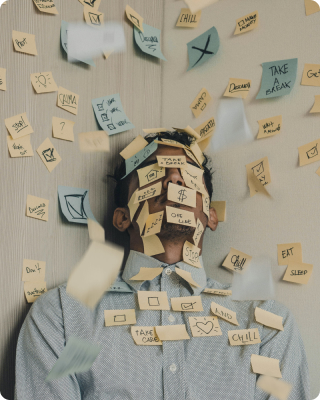

<section class="features">
    <div class="container">

        <h2 class="section-headline features__headline">С чем я могу<br>помочь</h2>
        <div class="features__switchers-wrapper">
            <p class="paragraph features__paragraph">Личность человека формируется из нескольких жизненных сфер. Какой
                аспект жизни мы бы не взяли, он повлияет на
                другой. Поэтому в любой области мы можем выстраивать такие отношения, которые нас устроят и приведут к
                самореализации в каждой из них. </p>
            <fieldset class="features-switchers">
                <div class="features-switchers__item" data-feature-switcher="relations">
                    <input type="radio" name="feature" id="relations" checked="checked">
                    <label for="relations">Отношения</label>
                </div>
                <div class="features-switchers__item" data-feature-switcher="meaning">
                    <input type="radio" name="feature" id="meaning">
                    <label for="meaning">Смысл жизни</label>
                </div>
                <div class="features-switchers__item" data-feature-switcher="emotions">
                    <input type="radio" name="feature" id="emotions">
                    <label for="emotions">Эмоции</label>
                </div>
                <div class="features-switchers__item" data-feature-switcher="states">
                    <input type="radio" name="feature" id="states">
                    <label for="states">Состояния</label>
                </div>
                <div class="features-switchers__item" data-feature-switcher="work">
                    <input type="radio" name="feature" id="work">
                    <label for="work">Работа</label>
                </div>
            </fieldset>
        </div>
        <div class="feature-description active" data-feature-name="relations">
            <div class="feature-description__text-box">
                <p class="paragraph features__paragraph">Я верю, что мы безнадежно социальные существа
                    и нуждаемся в постоянном контакте с другими людьми, чтобы чувствовать себя ценными и нужными.
                </p>
                <p class="paragraph features__paragraph">Сфера отношений крайне важна, потому что в основном она
                    определяет
                    довольствие жизни.</p>
            </div>
            
        </div>
        <div class="feature-description" data-feature-name="meaning">
            <div class="feature-description__text-box">
                <p class="paragraph features__paragraph">Жить без ощущения своего места и предназначения очень сложно,
                    такое
                    состояние представляется как болото, что может привести к разрушительным последствиям.</p>
                <p class="paragraph features__paragraph">Позиция исследователя на консультации позволит найти тот смысл,
                    которого не хватало.</p>
            </div>
            
        </div>
        <div class="feature-description" data-feature-name="emotions">
            <div class="feature-description__text-box">
                <p class="paragraph features__paragraph">Без эмоций жизнь не ощущается. Эмоции обладают своими функциями
                    и
                    помогают нам относиться к миру
                    и определять, что нам подходит, а что лучше избегать.</p>
                <p class="paragraph features__paragraph">Понимание своих эмоций и разрешение на их проявление позволяют
                    нам
                    заявить о себе и прийти к принятию действительности. Как пример:
                    застрявшие переживания, нарушенные границы, отсутствие бережного отношения
                    в прошлом, искаженные эмоции и функции.</p>
            </div>
            
        </div>
        <div class="feature-description" data-feature-name="states">
            <div class="feature-description__text-box">
                <p class="paragraph features__paragraph">Мы живем и развиваемся каждую минуту. Порой мы сталкиваемся с
                    сильнейшим стрессом, который настигает нас врасплох.</p>
                <p class="paragraph features__paragraph">Личностные кризисы, потери, травмы погружают нас
                    в тяжелые переживания такие как депрессия, тревога, личностные расстройства и зависимости.
                    Но из них есть выход, и я как раз помогаю адаптироваться и прожить их.</p>
            </div>
            
        </div>
        <div class="feature-description" data-feature-name="work">
            <div class="feature-description__text-box">
                <p class="paragraph features__paragraph">Каждый из нас сталкивается с потребностью реализовать себя.
                    Реализация через карьеру и свое дело — один самых доступных способов повысить качество своей жизни
                    и придать себе идентичность, на которую можно опираться до конца жизни.</p>
            </div>
            
        </div>
    </div>
</section>